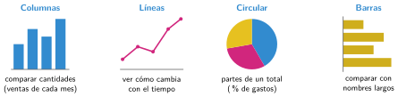
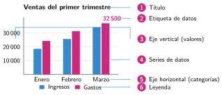

Gráficos
Criterios: 3c
🤔 Pienso10 min
Qué hago aquí: Piensa un momento y contesta con lo que ya sabes. No pasa nada si no lo sabes: es para empezar.
Tienes que explicar en una reunión cómo han ido las ventas de cada mes. ¿Llevarías la tabla con los números o un gráfico? ¿Por qué?
📖 Leo y aprendo40 min
Qué hago aquí: Lee despacio, mira los dibujos y los ejemplos, y quédate con la idea clave del final.
Un gráfico representa los datos con un dibujo para verlos de un vistazo. Cada tipo de gráfico sirve para una cosa:


Si el gráfico sale al revés (los meses en la leyenda y los conceptos abajo), pulsa Diseño de gráfico › Cambiar entre filas y columnas. Para datos de distinta escala, como temperatura y lluvia en un climograma, se usa un gráfico combinado con un eje secundario.
✏️ Hago160 min
Qué hago aquí: Haz las actividades en orden. Empieza siempre por las básicas.
¿Qué gráfico usarías en cada caso?
- El reparto del presupuesto de la empresa:
- Las ventas de cada mes durante tres años:
- Las ventas de seis comerciales en un mes:
Con los resultados de las elecciones, haz un gráfico circular con el porcentaje de votos de cada partido, con título y etiquetas de datos en porcentaje.
Con los espectadores de los multicines, haz un gráfico de columnas que compare las salas por meses. Cambia filas y columnas y elige el que se entienda mejor.
Haz un climograma: precipitaciones en columnas y temperaturas en líneas, con eje secundario.
Con los ingresos y gastos de la Librería Puente III, haz un gráfico de líneas con la evolución del beneficio de los doce meses. Escribe una conclusión de dos líneas, como para un informe.
Un compañero ha hecho un gráfico de columnas de las ventas de enero a diciembre y le sale una columna más alta que todas. ¿Qué ha pasado? ¿Cómo lo arreglas?
🚀 Amplío (si quieres saber más)
Qué hago aquí: ¿Has terminado? Lee la curiosidad o elige el reto. Es voluntario.
Añade minigráficos de línea a la tabla de ventas por vendedor y marca en ellos el punto más alto.
✅ Compruebo10 min
Qué hago aquí: Contesta sin mirar la ficha y marca cómo lo llevas.